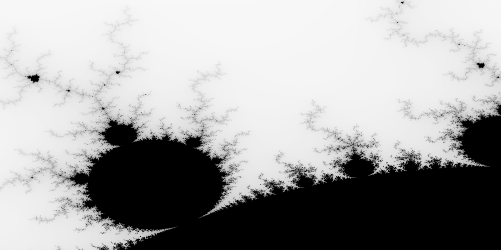

Example: Mandelbrot Set
Reference: Programming Rust
Reference: Mandelbrot Set
"The Mandelbrot set is the set of complex numbers \(c\) for which the function \( f_c(z) = z^2 + c \) does not diverge when iterated from \(z = 0\), i.e., for which the sequence \( f_c(0), f_c(f_c(0)) \), etc., remains bounded in absolute value.
The Mandelbrot set is the set of values of \(c\) in the complex plane for which the orbit of \(0\) under iteration of the quadratic map
\[ z_{n+1} = z^2_n + c \]
remains bounded.""
Source: Wikipedia Mandelbrot Set
We can exploit the property of the Mandelbrot set that a point \(c\) belongs to the Mandelbrot set if and only if it satisfies the condition
\[ \forall n \ge 0 \colon \lvert P_c^n(0) \le 2 \rvert \]
Should the absolute value of \( P_c^n(0) \) become \( > 2 \), the sequence escapes into infinity.
Since multiplication on hardware tends to be faster than division, we can exploit the fact that for any complex number \( z = x + iy \) for some real numbers \( x, y \in \mathbb{R} \), its absolute value is \( \lvert x^2 + y^2 \rvert \). Then the property becomes
\[ \begin{align} \lvert x^2 + y^2 \rvert &\le 2 \\ \Leftrightarrow x^2 + y^2 &\le 4 \end{align} \]
since \(x^2, y^2 \ge 0\) and so \( \lvert x^2 + y^2 \rvert \equiv x^2 + y^2 \).
Additionally, a loop can be used to avoid potential stack overflows from
recursive function calls overflowing the call stack (subject to tail call
optimizations).
Code
use std::fs::File; use std::io::Write; use std::str::FromStr; use num::Complex; use num_cpus; use image::png::PNGEncoder; use image::ColorType; use crossbeam; fn main() { let arguments: Vec<String> = std::env::args().collect(); if arguments.len() != 5 { writeln!( std::io::stderr(), "Usage: mandelbrot <FILENAME> <DIMENSIONS> <UPPER_LEFT> <LOWER_RIGHT>" ) .unwrap(); writeln!( std::io::stderr(), "Example: {} mandelbrot.png 1000x750 -1.20,0.35 -1,0.20", arguments[0] ) .unwrap(); std::process::exit(1); } let bounds = parse_pair(&arguments[2], 'x').expect("failed to parse <DIMENSIONS>"); println!("[INFO] bounds = {:?}", &bounds); let upper_left = parse_complex(&arguments[3]).expect("failed to parse <UPPER_LEFT>"); let lower_right = parse_complex(&arguments[4]).expect("failed to parse <LOWER_RIGHT>"); println!("[INFO] upper_left = {:?}", upper_left); println!("[INFO] lower_right = {:?}", lower_right); let mut pixels_buffer = vec![0; bounds.0 * bounds.1]; let threads = num_cpus::get(); println!("[INFO] detected {0} logical cores; spawning {0} threads...", threads); let rows_per_stripe = bounds.1 / threads + 1; { let stripes: Vec<&mut [u8]> = pixels_buffer .chunks_mut(rows_per_stripe * bounds.0) .collect(); crossbeam::scope(|spawner| { for (i, stripe) in stripes.into_iter().enumerate() { let top = rows_per_stripe * i; let height = stripe.len() / bounds.0; let stripe_bounds = (bounds.0, height); let stripe_upper_left = pixel_to_complex(bounds, (0, top), upper_left, lower_right); let stripe_lower_right = pixel_to_complex(bounds, (bounds.0, top + height), upper_left, lower_right); spawner.spawn(move |_| { render(stripe, stripe_bounds, stripe_upper_left, stripe_lower_right); }); } }) .expect("failed to spawn threads"); } write_image(&arguments[1], &pixels_buffer, bounds).expect("failed to write out to PNG file"); } fn parse_pair<T: FromStr>(s: &str, delimiter: char) -> Option<(T, T)> { match s.find(delimiter) { None => None, Some(index) => match (T::from_str(&s[..index]), T::from_str(&s[index + 1..])) { (Ok(l), Ok(r)) => Some((l, r)), _ => None, }, } } #[test] fn test_parse_pair() { assert_eq!(parse_pair::<i32>("", ','), None); assert_eq!(parse_pair::<i32>("10,", ','), None); assert_eq!(parse_pair::<i32>(",10", ','), None); assert_eq!(parse_pair::<i32>("10,20", ','), Some((10, 20))); assert_eq!(parse_pair::<i32>("10,20x", ','), None); assert_eq!(parse_pair::<f64>("0.5x", 'x'), None); assert_eq!(parse_pair::<f64>("0.5x1.5", 'x'), Some((0.5, 1.5))); } // Note: Rust has traits for specifying how types can be converted from // one to another – this can be an impl instead. fn parse_complex(s: &str) -> Option<Complex<f64>> { match parse_pair(s, ',') { Some((re, im)) => Some(Complex { re, im }), None => None, } } #[test] fn test_parse_complex() { assert_eq!( parse_complex("1.234,-0.0578"), Some(Complex { re: 1.234, im: -0.0578 }) ); assert_eq!(parse_complex(",-0.94"), None); } /// Try to determine whether the complex number `c` is an element of the /// Mandelbrot set, clamping to at most `limit` iterations to to check. /// /// If `c` is not an element of the Mandelbrot set, `Some(i)` is returned /// where `i` is the number of iterations needed to escape the circle /// (radius 2, centered at origin). /// /// If `c` is in fact an element of the Mondelbrot set (i.e. we failed to /// prove that `c` is not an element of the Mandelbrot set within the /// iteration `limit`), `None` is returned. fn escape_time(c: Complex<f64>, limit: u32) -> Option<u32> { let mut z = Complex { re: 0.0, im: 0.0 }; for i in 0..limit { z = z * z + c; if z.norm_sqr() > 4.0 { return Some(i); } } None } // Note: the function signature is lackluster at best. We can improve it // by using named structs in favor of anonymous tuples to help readability, // and `upper_left` and `lower_right` can be grouped together into some // struct, e.g. `ComplexPlaneConstraint`, as they usually are used together. fn pixel_to_complex( bounds: (usize, usize), pixel: (usize, usize), upper_left: Complex<f64>, lower_right: Complex<f64>, ) -> Complex<f64> { let (width, height) = ( lower_right.re - upper_left.re, upper_left.im - lower_right.im, ); let (col, row) = (pixel.0 as f64, pixel.1 as f64); let (img_width, img_height) = (bounds.0 as f64, bounds.1 as f64); Complex { re: upper_left.re + col * width / img_width, // Note that the pixel y coordinate *increases* from top to down, but // our view of the complex plane has the y coordinate / imaginary // component *decreasing* from top to down. im: upper_left.im - row * height / img_height, } } #[test] fn test_pixel_to_complex() { assert_eq!( pixel_to_complex( (100, 100), (25, 75), Complex { re: -1.0, im: 1.0 }, Complex { re: 1.0, im: -1.0 } ), Complex { re: -0.5, im: -0.5 } ); } fn render( pixels: &mut [u8], bounds: (usize, usize), upper_left: Complex<f64>, lower_right: Complex<f64>, ) { // Precondition: require as many pixels in the buffer as the output // image's resolution. assert!(pixels.len() == bounds.0 * bounds.1); for row in 0..bounds.1 { for column in 0..bounds.0 { let point = pixel_to_complex(bounds, (column, row), upper_left, lower_right); pixels[row * bounds.0 + column] = match escape_time(point, 255) { None => 0, Some(iterations_count) => 255 - iterations_count as u8, } } } } fn write_image( filename: &str, pixels: &[u8], bounds: (usize, usize), ) -> Result<(), std::io::Error> { let output = File::create(filename)?; let (width, height) = (bounds.0 as u32, bounds.1 as u32); let encoder = PNGEncoder::new(output); encoder.encode(&pixels, width, height, ColorType::Gray(8))?; Ok(()) }
The Rust loop
Rust provides a convenient way to write an infinite loop via the loop
keyword, instead of having to write while (true) such as in C.
#![allow(unused_variables)] fn main() { fn infinite_loop(mut x: f64) { loop { x = x * x; } } }
The num Package
Reference: rust-num/num
The num package contains useful mathematical types, functions and definitions
which could be useful.
The Complex Number
num represents a complex number through its Complex structure (struct)
type, with the real component re and the imaginary component im.
#![allow(unused_variables)] fn main() { struct Complex<T> { re: T, im: T } }
The Option<T> Type
Rust's Option<T> enum type encodes the possibility of a missing value.
This is to enforce the programming checking for both possibilities (present
or missing) at compile time so we don't miss branches (compared to possible
null pointers or values in other languages).
It is defined as
#![allow(unused_variables)] fn main() { enum Option<T> { None, Some(T) } }
The Option<T> type has one type parameter T, or we can say that its
variants (None and Some(T)) are generic over one type parameter T (even
though None doesn't actually need type information from T).
Documentation Comments
Rust documentation comments begin with three slashes /// and are associated
with a struct, enum, functions, members, constants, etc.
The rustdoc utility can produce document from such documentation comments
and documentation tests (known as doctests) are supported.
Generic Function
To parse a complex number, we define parse_pair as a generic function
for some type T which implements the trait FromStr, as defined in the
type capture clause <T: FromStr>. This means that we can invoke parse_pair
to try to parse a string s into a 2-tuple (T, T) separated by the
delimiter character.
T is a type parameter to parse_pair, and on the call site we are able
to either explicitly specify the type of T (like parse_pair::<i32>) or
if enough type information exists the Rust compiler may be able to infer
the type of T by information from the call site.
In Rust, generic functions like parse_pair do not have run-time overheads
for matching types. Instead, they behave like C++ templates in that the Rust
compiler performs compile-time monomorphisation to generate specialized
versions of parse_pair for every type for which parse_pair needs to work
with (e.g. parse_pair::<i32> becomes something like parse_pair_i32 but
properly obfuscated to avoid name conflicts).
Matching
In Rust, _ is a valid identifier. This is often useful for ignoring
return values that are not needed, or to serve as a "wildcard" in match
expressions:
#![allow(unused_variables)] fn main() { match optional_expression { Some(val) => {}, _ => {} } }
Mapping from Pixels to Complex Numbers
The coordinate space of pixels in the generated image needs to correspond to some point from the complex plane – this requires that we define some mapping
\[ \mathtt{pixel\_to\_complex} \colon \mathbb{Z}^2 \mapsto \mathbb{C }\]
from the pixel cartesian coordinate \( (x, y) \in \mathbb{Z}^2 \) to a point in the complex plane \( \mathbb{C} \).
Tuples
Rust supports product types, or tuples. A tuple may have zero or more
members that can be different types:
#![allow(unused_variables)] fn main() { // 0-tuple: aka the `unit` type let unit: () = (); // 1-tuple let one_tuple: (f64) = (0.5); // 2-tuple let two_tuple: (f64, &str) = (0.5, "hello"); }
Tuples support accessing by index (indices start from 0), e.g.
fn main() { let three_tuple = (1, 'x', 0.9); println!("three_tuple.0 = {}", three_tuple.0); println!("three_tuple.1 = {}", three_tuple.1); println!("three_tuple.2 = {}", three_tuple.2); }
Type Casting / Coersion
The type cast / coersion expression expression as T tries to cast
expression of type U into some type T.
fn main() { let x: u64 = 123; let y: f64 = x as f64; println!("y = {}", y); }
Rust does not convert between numeric types implicitly to prevent issues such as floating-point errors and precision losses, and instead requires such casts to be explicitly written out, compared to C/C++.
Working with Images
Reference: image-rs/image
Rust has the image create for working with images of various formats.
The ? Operator
The ? operator is syntactical sugar for
#![allow(unused_variables)] fn main() { match expression_evaluating_to_result { Ok(f) => f, Err(e) => { return Err(e); } } }
given that the containing function returns Result<T, E> itself.
For example,
#![allow(unused_variables)] fn main() { let output = File::create(filename)?; }
is equivalent in semantics to
#![allow(unused_variables)] fn main() { let output = match File::create(filename) { Ok(f) => f, Err(e) => { return Err(e); } }; }
Vector Initialization Macro
The vec![v; n] macro can be useful to create a Vec of size n with all
elements initialized to v.
fn main() { let vector = vec![5; 3]; println!("vector = {:?}", &vector); }
Getting Concurrent
We can divide the work of computing the image into sections, e.g. into horizontal stripes, so we can use divide and conquer to delegate work to different processors.
Reference: crossbeam-rs/crossbeam
Rust has the crossbeam crate which has support for multiple concurrency
tools, including scoped thread.
Reference: seanmonstar/num_cpus
We spawn n threads where n is the number of logical cores on the system
to do the work. Note: this requires careful profiling as the overhead of
thread context-switching by the OS might overweigh the benefits brought by
multiple threads.
Example Output
cargo run mandelbrot.png 1000x500 -1.20,0.35 -1,0.20
